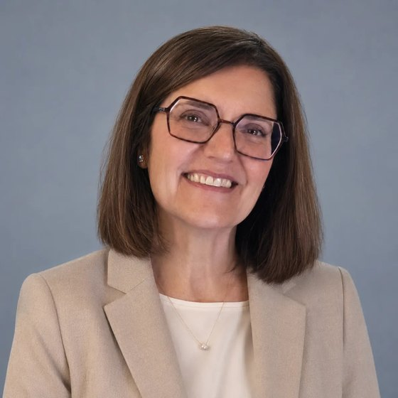
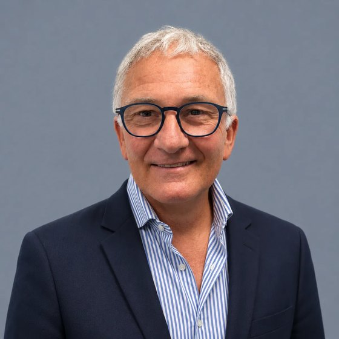

Software per le aziende sanitarie e le regioni italiane: Frankura per il percorso oncologico, VIS Pharma Compass per la spesa farmaceutica.
Hadi Health è l'iniziativa con cui la Fondazione bioERGOtech porta il proprio software nelle aziende sanitarie e nelle regioni. Vende e gestisce due prodotti che hanno lo stesso acquirente: Frankura, che prepara i casi oncologici per i gruppi multidisciplinari, e VIS Pharma Compass, che mostra dove si può intervenire prima sulla spesa farmaceutica. Il nostro obiettivo è portarli in tutte le regioni italiane nel 2027.
di lavoro medico che i moduli A, B e C di Frankura possono liberare ogni anno all'ASL VCO, pari a {{vco_value}}. Stima della proposta di progetto, da misurare nel progetto pilota.
di valore annuo, scenario prudenziale ({{vis_minimum}} nel minimo), stimato da VIS sui dati reali delle quattro ASL abruzzesi.
nella nostra rete, in {{net_regions_touched}} regioni: {{net_beta}} lavorano con noi sui prototipi, {{net_direct}} sono contatti diretti. I loro territori contano {{net_pop}} di residenti.
valore annuo potenziale per gli enti di quei territori, in tempo medico e in spesa farmaceutica, scenario prudenziale ({{net_total_lo}} nel minimo). Non è un ricavo di Hadi Health.
I valori economici sono stime costruite su due casi di riferimento (l'analisi di VIS sui dati delle quattro ASL abruzzesi e il progetto di Frankura per l'ASL VCO) e su dati pubblici; non sono ancora misure prima e dopo. Metodo e ipotesi sono nel capitolo 7 e in appendice.
La Fondazione bioERGOtech è nata a Taranto nell'aprile 2025 e lavora tra Taranto e Zurigo. Il team riunisce competenze di ingegneria biomedica, biostatistica, sviluppo software, diritto e design, con consulenti in reumatologia, market access e investimenti in sanità; le competenze cliniche di ogni progetto vengono dai medici e dai farmacisti degli enti con cui lavoriamo. Non partiamo da una tecnologia: partiamo da una persona che ha un problema, ne risponde e non riesce a risolverlo con il tempo e i dati che ha davanti.
Il filo comune dei progetti che abbiamo accettato non è la pianificazione delle terapie, di cui si occupano già in molti. È il tempo. Ospedali e regioni possiedono già gran parte dei dati che servono per decidere, ma li leggono tardi. Un oncologo ricopia la storia clinica dalla scheda di accoglienza a quella del gruppo multidisciplinare. Una nota di credito dei registri AIFA scade prima di essere richiesta. Un biosimilare è disponibile da mesi, ma la spesa resta sul farmaco originatore. In ciascun caso il dato esiste; manca il tempo per trasformarlo in una decisione.
Un clinico, un farmacista o un dirigente lo vive ogni giorno, ce lo porta e resta titolare della decisione. Il software la prepara, non la sostituisce.
Lavoriamo sui flussi e sui sistemi che l'ente usa oggi. Non chiediamo di produrre dati nuovi: rendiamo leggibili in tempo quelli che oggi arrivano tardi.
Prima e dopo l'intervento, in ore di lavoro e in euro, con numeri che il committente può verificare. Se l'effetto non si può misurare, non proponiamo l'intervento.
Un ente del Terzo settore può svolgere attività diverse da quelle di interesse generale solo se lo statuto lo consente e se restano secondarie e strumentali (D.Lgs. 117/2017, art. 6). Vendere e gestire software clinico per enti pubblici richiede una struttura d'impresa, con responsabilità contrattuali, assicurative e di sicurezza proprie. Hadi Health è quella struttura: oggi un progetto della Fondazione, domani una società. Fino ad allora la controparte di contratti, analisi diagnostiche e progetti pilota è la Fondazione bioERGOtech ETS. Hadi, in arabo, significa guida. Una guida conosce la strada e accorcia il cammino; la meta la sceglie chi viaggia.
Le aziende sanitarie e le regioni pagano sia il tempo dei clinici sia i farmaci. In entrambi i casi hanno già i dati, ma li usano in ritardo.
Nel 2025 la spesa per acquisti diretti delle strutture pubbliche (farmaci di classe A e H, al netto dei payback) è stata di {{italy_net}}, pari all'{{italy_share}} del fabbisogno sanitario nazionale contro un tetto dell'8,30%. Lo sforamento è di {{italy_overrun}} e nessuna regione rientra nel tetto. La Campania ha lo sforamento maggiore in euro, {{campania_overrun}}.
Molte opportunità di risparmio si leggono già nei dati dell'azienda sanitaria e nelle fonti pubbliche: le scadenze brevettuali, i biosimilari disponibili, le note di credito dei registri AIFA. Il problema è il ritardo con cui l'organizzazione le individua e interviene.
In Italia si stimano circa {{italy_cases}} nuove diagnosi di tumore all'anno; nel 2023 l'AIOM ha censito {{italy_units}} unità di oncologia medica, {{it_units_public}} delle quali pubbliche. Tra il 2012 e il 2022 i posti letto pubblici di oncologia medica sono scesi da 5.262 a 4.159.
Nella Rete Oncologica del Piemonte e della Valle d'Aosta ogni nuovo paziente passa dal Centro Accoglienza e Servizi (CAS) al Gruppo Interdisciplinare Cure (GIC); le altre reti regionali hanno percorsi analoghi, spesso con nomi diversi. Ogni passaggio richiede di ricopiare e riassumere dati che esistono già. All'ASL VCO la proposta di progetto stima in {{vco_hours}} ore l'anno il lavoro medico che si può liberare.
Acquisti diretti di farmaci di classe A e H al netto dei payback, sul fabbisogno sanitario di ciascuna regione (AIFA, consuntivo 2025). Accanto a ogni barra lo sforamento in euro. Le {{regions_above}} regioni in cui abbiamo un interlocutore superano tutte il tetto, dalla Lombardia alla Sardegna.
La legge 132/2025 sull'intelligenza artificiale, in vigore dal 10 ottobre 2025, stabilisce all'art. 7 che in sanità l'IA è di supporto e la decisione resta al medico. È il principio su cui sono costruiti entrambi i prodotti.
Secondo l'Osservatorio Sanità Digitale del Politecnico di Milano, il 61% degli specialisti usa l'IA generativa, quasi sempre su piattaforme generaliste. Gli enti hanno bisogno di strumenti conformi, dentro i loro sistemi.
Un terzo delle strutture pubbliche teme di ridimensionare i progetti digitali dopo il PNRR, e la metà indica le risorse limitate come primo ostacolo. Servono strumenti che si possano finanziare con le risorse ordinarie di parte corrente e che si ripaghino.
Frankura si integra con il software che l'ospedale usa già e segue il paziente dalla prima visita al referto del gruppo multidisciplinare. Non sostituisce il giudizio clinico: lo prepara e lo struttura.
Registra la visita CAS e ambulatoriale e compila la scheda nella cartella oncologica.
Trasferisce la storia clinica nella scheda GIC, senza ricopiature e senza dati mancanti.
Una pagina con le opzioni indicate dalle linee guida AIOM ed ESMO. Il gruppo la conferma, la modifica o la respinge.
Referti standardizzati e interoperabili (FSE 2.0, HL7 FHIR, PDF/A), leggibili dal medico di medicina generale.
L'ASL VCO gestisce ogni anno {{vco_cas}} schede CAS, {{vco_visits}} visite oncologiche e {{vco_gic}} casi discussi nei GIC. Secondo la stima della proposta di progetto (per esempio 15 minuti risparmiati per visita), i moduli A, B e C possono liberare le ore indicate nella tabella, valutate al costo orario del personale medico di {{vco_hourly}}. Ogni modulo si può attivare indipendentemente dagli altri. Il modulo D porta benefici di qualità che non abbiamo quantificato.
Frankura è stato sviluppato con la SOC Oncologia dell'ASL VCO, diretta dal dott. Mario Franchini. Il progetto pilota è in attesa dell'approvazione regionale e non c'è ancora un accordo scritto: oggi Frankura non è in uso nella cura. Nel progetto pilota misureremo queste grandezze prima e dopo l'installazione.
| Modulo | Ore/anno | Valore/anno |
|---|---|---|
| Totale | {{vco_hours}} h | {{vco_value}} |
Direzione sanitaria, oncologia e rete oncologica regionale. La Rete Oncologica del Piemonte e della Valle d'Aosta conta 36 CAS e 283 GIC: una sola rete offre decine di punti di installazione con lo stesso percorso.
Licenza per ospedale da {{frk_low}} a {{frk_high}}, in base ai moduli attivati, alla dimensione della struttura e alle risorse necessarie, più un canone annuo di gestione.
Le soluzioni più diffuse trascrivono la visita. Frankura prepara il lavoro del gruppo multidisciplinare, che è la parte più lunga del percorso e quella che queste soluzioni non coprono.
VIS Pharma Compass è uno strumento di analisi in sola lettura per i servizi farmaceutici aziendali, la direzione sanitaria e il servizio farmaceutico regionale. Riconcilia acquisti ed erogazioni con il bilancio, segnala scadenze brevettuali e biosimilari non usati, confronta le aziende della stessa regione e individua le note di credito dei registri AIFA ancora da richiedere, prima che scada il termine.
Il prototipo funziona su dati reali delle quattro aziende sanitarie abruzzesi: {{vis_records}} record di erogazione, {{vis_perimeter}} di spesa annua. Non c'è ancora un contratto commerciale: è una verifica del metodo sui loro dati. Il modello lavora su dati aggregati per struttura, molecola e periodo e non produce informazioni sul singolo paziente.
La tabella riporta il valore annuo per fase, nello scenario prudenziale. Lo scenario minimo è la metà, {{vis_minimum}}. In più, si stima che VIS restituisca all'attività di governo della spesa {{vis_days}} giornate di lavoro dei farmacisti all'anno ({{vis_hours}} ore), poco più di tre mesi di un dirigente farmacista a tempo pieno: un'ipotesi costruita su una struttura di dimensione media, da verificare sui volumi dell'ente.
VIS non è un dispositivo medico: non interviene su decisioni relative al singolo paziente.
| Fase | Valore/anno |
|---|---|
| Totale prudenziale | {{vis_prudent}} |
| Voce | Azienda singola | Configurazione regionale |
|---|---|---|
| Analisi diagnosticaTre settimane sui dati dell'ente, senza installazione | {{vis_diagnostic}} | {{vis_diagnostic}} |
| Cruscotto e radar scadenze (M1+M2)In esercizio sul prototipo | {{vis_asl_m12}}/anno | |
| Con registri, File F e flussi (M1+M2+M3)M3 in fase di completamento | {{vis_asl_m123}}/anno | |
| Configurazione completaTutti i moduli: M6 (solo in regione) in esercizio, M4, M5 e M8 in completamento, M7 in sviluppo | {{vis_asl_full}}/anno | {{vis_reg_base}}/anno più {{vis_reg_per}} per azienda |
| Attivazione, una tantum | {{vis_asl_activation}} | {{vis_reg_act}} più {{vis_reg_act_per}} per azienda |
Prezzo per modulo e per perimetro, non per utente; canone fisso con fatturazione trimestrale posticipata. Al sesto mese, se gli indicatori concordati non sono raggiunti, l'ente può recedere senza oneri: il suo rischio è limitato a un semestre di canone e all'attivazione.
I due prodotti risolvono problemi diversi, ma per lo stesso ente, con lo stesso metodo e con le stesse regole sui dati. Ogni contratto apre la porta all'altro prodotto.
| Frankura | VIS Pharma Compass | |
|---|---|---|
| Chi compra | Direzione generale e sanitaria dell'ASL o dell'ospedale; rete oncologica regionale | Direzione generale dell'ASL; servizio farmaceutico regionale |
| Chi lo usa | Oncologi, componenti dei GIC, personale del CAS | Farmacisti, controllo di gestione, direzione sanitaria |
| Dati di partenza | Cartella oncologica, schede CAS e GIC, referti | Flussi di acquisto ed erogazione, registri AIFA, bilancio |
| Effetto da misurare | Ore di lavoro medico liberabili per paziente | Euro di spesa e giorni di reazione, per opportunità |
| Qualificazione | Non è un dispositivo medico: prepara e organizza le informazioni, la decisione resta al gruppo multidisciplinare | Non è un dispositivo medico |
| Prezzo | Licenza da {{frk_low}} a {{frk_high}} per ospedale, più canone | Da {{vis_asl_m12}} a {{vis_asl_full}} l'anno per azienda; regione da {{vis_reg_base}} |
| Stato | Prototipo sviluppato con l'ASL VCO; progetto pilota in attesa dell'approvazione regionale | Prototipo sui dati delle quattro ASL abruzzesi; prova in corso a Caserta e Salerno |
L'ente resta titolare del trattamento e il fornitore agisce come responsabile (GDPR, art. 28). Elaborazione nell'Unione Europea o nel data center dell'ente, registro degli accessi, restituzione dei dati a fine contratto senza costi di uscita.
Lo stesso ufficio acquisti e una valutazione d'impatto sulla protezione dei dati in gran parte comune. Se l'ente acquista i due prodotti insieme, la soglia per l'affidamento diretto si calcola sul valore complessivo dell'intera durata.
Il modulo M5 di VIS misura gli sprechi di allestimento dei farmaci oncologici. Oncologia e farmacia guardano gli stessi pazienti da due lati: la farmacia che adotta VIS conosce già l'oncologia che adotterà Frankura, e viceversa.
residenti; circa {{sal_patients}} nuovi pazienti oncologici e {{sal_spend}} di spesa farmaceutica all'anno, stimati.
valore annuo di VIS nello scenario prudenziale, {{asl_salerno_vis_lo}} nel minimo.
valore annuo di Frankura, pari a circa {{sal_frk_hours}} ore di lavoro medico.
il costo per l'ASL nel primo anno, {{sal_cost_after}} dal secondo, a fronte di un valore stimato {{sal_value}} l'anno per l'intero territorio, comprese le aziende ospedaliere che vi operano.
VIS in configurazione completa per azienda singola ({{vis_asl_full}} l'anno più {{vis_asl_activation}} di attivazione); Frankura con una licenza di {{frk_mid}}, a metà della fascia di prezzo, e un canone ipotizzato pari al {{frk_fee_share}} della licenza dal secondo anno. Insieme, i due prodotti superano la soglia dell'affidamento diretto ({{direct_award}}) già nel primo anno. Stime con il metodo del capitolo 7.
In {{net_regions_touched}} regioni abbiamo {{net_entities}} interlocutori che possiamo raggiungere senza intermediari: {{net_beta}} lavorano con noi sui prototipi, {{net_direct}} sono contatti diretti. Si tratta di {{net_regions}} amministrazioni regionali, {{net_asl}} aziende sanitarie e {{net_hospitals}} ospedali.
residenti nei territori della rete, il {{net_pop_share}} della popolazione italiana.
di spesa farmaceutica annua nei territori della rete (AIFA 2025, lordo).
tre enti lavorano già con noi sui prototipi; gli altri dodici li conosciamo e li possiamo coinvolgere da subito.
Confini: ISTAT, via openpolis (CC BY 4.0). I punti delle regioni sono posti all'interno del territorio regionale; quelli di ASL e ospedali sulla città.
In prova: ente che lavora con noi sul prototipo di uno dei prodotti, prima di qualunque contratto. Contatto diretto: ente che conosciamo e possiamo raggiungere senza intermediari. Riportiamo nomi e ruoli solo se verificati su fonti pubbliche (siti e atti degli enti, stampa) a ottobre 2026; per le cariche politiche indichiamo l'ufficio. Gli altri nomi sono disponibili su richiesta. Dove l'ente non ha ancora indicato un prodotto, proponiamo entrambi.
{{table_network}}Partiamo da due casi di riferimento, uno per prodotto, costruiti sui dati reali di due enti, e li estendiamo agli altri territori in proporzione a un dato pubblico: per VIS la spesa farmaceutica, per Frankura i nuovi casi di tumore. Non sono ancora misure prima e dopo: le daranno il progetto pilota all'ASL VCO e la verifica al sesto mese dei contratti VIS.
In Abruzzo il valore prudenziale è di {{vis_prudent}} su {{vis_perimeter}} di spesa: {{vis_per_million_prudent}} per ogni milione di euro di spesa ({{vis_per_million_minimum}} nel minimo). Applichiamo questo rapporto alla spesa farmaceutica 2025 di ciascuna regione (AIFA, classi A, H e C, al lordo dei payback). Per un'azienda sanitaria usiamo la quota della regione in proporzione ai residenti.
All'ASL VCO il valore è di {{vco_value}} su {{vco_cas}} nuovi pazienti oncologici: {{frk_per_patient}} e {{frk_hours_per_patient}} ore di medico per paziente. Applichiamo questi valori ai nuovi casi di tumore di ciascuna regione (AIRTUM). Verifica: l'ASL VCO registra {{vco_cas_rate}} schede CAS ogni 1.000 residenti, il Piemonte {{piemonte_rate}} nuovi casi ogni 1.000.
In evidenza il prodotto proposto a ciascun ente. ASL VCO (Frankura) e Regione Abruzzo (VIS) sono i casi di riferimento; gli altri valori sono ricavati in proporzione e arrotondati.
Nei grafici ogni territorio compare una sola volta: le ASL di una regione che è già nella rete sono comprese nel valore della regione, e gli ospedali non sono sommati. Così i totali non contano due volte lo stesso euro. Per un ospedale il valore dipende dai suoi volumi: Frankura vale circa {{frk_per_1000}} e {{frk_hours_per_1000}} ore di medico l'anno ogni 1.000 nuovi pazienti oncologici.
all'anno nello scenario prudenziale, {{net_vis_lo}} nel minimo.
all'anno, pari a circa {{net_frk_hours}} ore di lavoro medico che si potrebbero restituire all'attività clinica.
il valore annuo potenziale dei due prodotti nei territori della rete, scenario prudenziale; {{net_total_lo}} nel minimo.
all'anno: il valore di VIS sulla spesa farmaceutica italiana per acquisti diretti ({{italy_gross}} lordi nel 2025).
all'anno: il valore di Frankura su circa {{italy_cases}} nuove diagnosi, pari a {{italy_frk_hours}} ore di lavoro medico.
Canoni fissi e licenze, non quote del risparmio. Il valore per l'ente è un argomento a sostegno della decisione, non una parte del prezzo.
Proporre a un ente pubblico di pagare una quota del risparmio non ha oggi una base contabile né un precedente documentato nella sanità italiana: il risparmio di un'azienda confluisce in gran parte nella posizione regionale, il bilancio non ha una voce per remunerarlo e servirebbe un certificatore indipendente. Per questo VIS ha un canone fisso con recesso al sesto mese, e Frankura una licenza per ospedale con un canone di gestione.
Canoni VIS da listino, IVA esclusa. La configurazione regionale comprende tutte le aziende sanitarie pubbliche della regione, perché il valore è calcolato sulla spesa di tutte. Per le ASL con meno di 300.000 residenti la configurazione più adatta è M1+M2, e in quel caso il valore comprende solo programmazione e acquisto, il {{vis_m12_share}} del totale. Nello scenario minimo il valore supera il canone in ogni ente, da {{mult_min}} volte ({{mult_min_name}}) a {{mult_max}} volte ({{mult_max_name}}). In Abruzzo, con la configurazione completa da {{vis_fee_abruzzo}} l'anno, basta realizzare il {{vis_breakeven}} dello scenario prudenziale perché il servizio si ripaghi; con M1, M2, M3 e il benchmark per attività (M8), a {{vis_reg_m1238}} l'anno, ne basta il {{vis_breakeven_m1238}}.
Nel 2027 vogliamo VIS in tutti i {{it_regions}} sistemi sanitari regionali e Frankura in tutte le oncologie italiane. Chi decide in nove regioni ci conosce già. A prezzi di listino, il mercato completo vale così.
regioni e province autonome, ciascuna con la sua configurazione regionale di VIS.
aziende sanitarie pubbliche: ASL, ASST, aziende ospedaliere e universitarie, IRCCS pubblici.
unità di oncologia medica censite dall'AIOM, {{it_units_public}} delle quali pubbliche: i centri per Frankura.
di canoni ricorrenti ogni anno, dopo un primo anno da {{it_first}} tra canoni, attivazioni e licenze.
il valore annuo dei due prodotti in Italia (capitolo 7): i canoni ne sono {{it_fee_share}}.
Canoni VIS da listino: in ogni regione la configurazione completa su tutte le sue aziende pubbliche; Valle d'Aosta, Bolzano, Trento e Molise, con un'azienda sola, nella configurazione per azienda singola. Frankura con una licenza di {{frk_mid}} per oncologia e un canone del {{frk_fee_share}}, le stesse ipotesi dello scenario. Aziende al 2026 (Ministero della Salute, aggiornato con le riforme regionali successive); oncologie: AIOM, Libro bianco 2023, unità che hanno risposto al censimento.
Accanto all'obiettivo teniamo uno scenario prudente, che il piano regge anche se l'adozione segue i tempi più lenti degli acquisti pubblici. Il numero di clienti è un'ipotesi, i prezzi sono quelli di listino. Ipotizziamo che i tre enti che lavorano con noi sui prototipi diventino clienti nel 2027, che una regione adotti VIS nel 2028 e una seconda nel 2029, e che Frankura arrivi a {{scenario_centres}} centri oncologici in tre anni. Per Frankura assumiamo una licenza di {{frk_low}} all'ASL VCO e di {{frk_mid}} negli altri centri, entrambe nella fascia di prezzo. Il canone annuo, non ancora quantificato, è ipotizzato al {{frk_fee_share}} della licenza dall'anno successivo all'installazione.
A fine 2029 i ricavi ricorrenti ammontano a circa {{rec_total}} l'anno ({{rec_vis}} da VIS, {{rec_frk}} dai canoni di Frankura). Il conto economico completo, con i costi di personale, infrastruttura e sicurezza, sarà costruito con i partner al momento della costituzione della società.
spesa italiana in sanità digitale nel 2025, +9% sul 2024 (Politecnico di Milano).
la parte spesa dalle strutture sanitarie nel 2024; {{digital_regions}} dalle regioni.
medicinali acquistati dalle strutture sanitarie pubbliche nel 2025 secondo il Rapporto OsMed, con un perimetro diverso dal monitoraggio AIFA dei capitoli 2 e 7.
la Missione Salute del PNRR, che ha finanziato la digitalizzazione di cui i nostri prodotti si servono.
| Chi | Cosa fa | Differenza |
|---|---|---|
| IQVIA ItaliaFarma360 | Raccoglie i consumi di tutte le aziende della Regione Calabria e fornisce cruscotti di spesa, senza costi per la Regione (decreto 14885/2025). | Un concorrente a prezzo zero. VIS risponde con opportunità quantificate in euro per l'azienda e con un recesso al sesto mese. |
| Maps HealthcareBI Health | Business intelligence per aziende sanitarie e regioni, forte nel Lazio. A settembre 2026 Maps Healthcare ha firmato l'accordo vincolante per rilevare BI Health a 3,7 milioni di euro, con closing previsto entro novembre. | Conferma che il segmento ha valore. VIS è costruito sul percorso farmaceutico, non su una piattaforma generale. |
| Cineca ARNO, CliCon | Banche dati di popolazione e analisi retrospettive per ASL e regioni, soprattutto a fini di studio. | VIS lavora sui dati dell'esercizio in corso, con segnalazioni e proiezioni per chi deve decidere. |
| Strumenti pubbliciAIFA OsMed, società regionali | Dati aggregati gratuiti e sistemi sviluppati da società in house regionali, come LAZIOcrea. | Utili per il confronto nazionale, non per agire sulla singola azienda. |
| Chi | Cosa fa | Differenza |
|---|---|---|
| Trascrizione della visitaTandem Health, Microsoft Dragon Copilot, Nabla, Heidi, Corti con Dedalus, MioDottore | Ascoltano la visita e redigono la nota clinica. Tandem ha raccolto 100 milioni di dollari nel 2026; Corti è integrato nel software di Dedalus, tra i principali fornitori di cartelle cliniche ospedaliere in Italia. | Coprono il modulo A, che diventerà una funzione standard. Frankura punta sui moduli B e C, il lavoro per il GIC. |
| Software per i gruppi multidisciplinari (tumor board)Roche navify, Siemens AI-Pathway Companion, GE CareIntellect, Microsoft con Oxford | Aggregano i dati del paziente per la discussione multidisciplinare; alcuni suggeriscono come proseguire il percorso di cura. | Sviluppati per altri sistemi sanitari. Frankura è costruito sul percorso delle reti oncologiche italiane (CAS e GIC in Piemonte e Valle d'Aosta) e sulle linee guida AIOM. |
| Startup italianeReportAId, Alfadocs | Strutturano referti o note, soprattutto in ambito privato e ambulatoriale. | Non coprono il percorso oncologico dall'accoglienza al referto del GIC. |
Ogni contratto parte da una prova sui dati dell'ente, rispetta le soglie del Codice dei contratti pubblici e cresce dall'azienda alla regione.
VIS: analisi diagnostica di tre settimane, {{vis_diagnostic}}, senza installazione. Frankura: progetto pilota con misure prima e dopo, come quello proposto all'ASL VCO.
Affidamento diretto se il valore stimato dell'appalto per l'intera durata, IVA esclusa, è inferiore a {{direct_award}} (D.Lgs. 36/2023, art. 50): per esempio tre anni di VIS M1+M2+M3 ({{vis_asl_m123_3y}}) o una licenza Frankura da {{frk_low}}. Oltre, procedura negoziata.
Attivazione in novanta giorni. Al sesto mese si controllano gli indicatori concordati; se non sono raggiunti, l'ente può recedere senza oneri.
Quando il perimetro cresce: procedura negoziata sotto la soglia europea, gara europea o accordo quadro regionale oltre. Una configurazione a quattro ASL vale {{vis_reg_4_3y}} in tre anni.
Il frazionamento artificioso dell'appalto per restare sotto soglia è vietato (D.Lgs. 36/2023, art. 14) e il principio di rotazione (art. 49) limita gli affidamenti diretti ripetuti allo stesso operatore economico: se analisi diagnostica e contratto vanno allo stesso operatore, il secondo affidamento richiede una motivazione specifica, che prepariamo con l'ente. Presentiamo fin dall'offerta il percorso amministrativo corretto.
Costituiamo Hadi Health. L'ASL Caserta e l'ASL Salerno passano dalla prova al contratto VIS; l'ASL VCO, con l'approvazione regionale, avvia Frankura. Analisi diagnostiche in tutti gli enti della rete.
Configurazione regionale di VIS nelle cinque regioni in cui abbiamo un referente: Campania, Piemonte, Abruzzo, Puglia e Liguria. Frankura nella Rete Oncologica del Piemonte e della Valle d'Aosta.
VIS in ciascuna delle {{it_regions}} regioni e province autonome, partendo da un'analisi diagnostica. Frankura nelle reti oncologiche regionali e negli ospedali privati accreditati.
Nel 2028 e nel 2029 completiamo le installazioni avviate e attiviamo in ogni ente i moduli che non ha ancora.
Ingegnere biomedico, con esperienze all'ETH di Zurigo, a Harvard e al MIT.

Avvocata e imprenditrice. Segue organizzazione e operazioni.
Avvocata. Segue governance, contratti e conformità normativa.
Biostatistico, con dieci anni di esperienza; lavora su agenti di IA e dati clinici.
Sviluppa il software dei prodotti.
Designer. Cura l'identità visiva e la comunicazione.
Reumatologa, Collegio Reumatologi Italiani (CReI)

Market access, Gilead Sciences
Managing Director, 3B Future Health Fund
Valutazioni d'impatto, sicurezza informatica e qualificazione dei servizi cloud per la PA presso l'ACN.
Gare, accordi quadro e rapporti con le centrali di committenza regionali.
HL7 FHIR e connettori verso cartelle cliniche e gestionali di farmacia.
Un farmacista senior che accompagni le direzioni nell'uso di VIS.
Oggi Hadi Health è un progetto senza personalità giuridica propria. Il passo successivo è costituire una società che firmi i contratti, ne risponda e porti i prodotti in tutta Italia.
La società sarà il luogo dei prodotti e dei contratti, con responsabilità chiare verso gli enti. Struttura societaria, ingresso dei partner e accordi su proprietà intellettuale e uso dei dati si definiscono insieme a loro.
| Rischio | Come lo gestiamo |
|---|---|
| Tempi degli acquisti pubblici | Analisi diagnostica e affidamento diretto sotto soglia per partire; procedura negoziata, gara europea o accordo quadro quando il perimetro cresce. Il recesso al sesto mese riduce il rischio per l'ente e rende più semplice la decisione di partire. |
| Chi risparmia non è chi paga | Il risparmio farmaceutico di un'azienda confluisce in buona parte nella posizione regionale. Per questo puntiamo alla configurazione regionale, dove chi paga e chi beneficia coincidono. |
| Concorrenti grandi o gratuiti | La trascrizione della visita diventerà una funzione standard dei software clinici, e in Calabria IQVIA offre il monitoraggio della spesa senza costi. Puntiamo dove la concorrenza è debole: la preparazione del GIC e le opportunità quantificate in euro per la singola azienda. |
| Dati sanitari | L'ente resta titolare del trattamento e il fornitore agisce come responsabile (GDPR, art. 28). VIS lavora su dati aggregati e, dove serve il dettaglio, su dati pseudonimizzati all'origine. Frankura tratta invece dati clinici nominativi, compreso l'audio della visita (modulo A): installiamo solo dopo la valutazione d'impatto dell'ente, per la quale forniamo la documentazione tecnica. Per entrambi i prodotti, elaborazione nell'Unione Europea o presso l'ente e registro degli accessi. |
| Stime da confermare | I valori di questo piano vengono da due casi di riferimento, costruiti sui dati di due enti, e da dati pubblici. Ogni contratto parte da una prova sui dati dell'ente e da indicatori misurati prima e dopo. |
| Persone chiave e società da costituire | Oggi il progetto si regge su poche persone chiave e non è ancora una società. Per questo cerchiamo partner: per costituire la società, aggiungere competenze regolatorie e commerciali e distribuire le responsabilità su più persone. |
Non chiediamo un importo. Il nostro obiettivo è l'intero mercato italiano nel 2027, e chi decide in nove regioni ci conosce già. Per arrivarci ci serve prima di tutto una cosa: l'entità legale.
Cerchiamo soprattutto chi ci aiuta a creare la società: soci e investitori per il capitale iniziale, ed esperienza per impostare struttura societaria, governance e contratti con gli enti pubblici. Fondi specializzati in salute, investitori industriali e imprenditori del settore. Struttura e condizioni si definiscono insieme.
Un'analisi diagnostica o un progetto pilota sui propri dati, con indicatori concordati prima di iniziare. In cambio, risultati misurati sul proprio perimetro e la possibilità di pubblicarli insieme.
Fornitori di cartella clinica, gestionali di farmacia e integratori di sistema: l'accesso ai dati in modo standard e un canale verso i loro clienti in tutta Italia.
IRCCS, reti oncologiche, università e società scientifiche per misurare l'effetto dei prodotti sul campo e pubblicarne i risultati.
Il dettaglio di ogni numero, con la fonte e la data, è disponibile su richiesta.